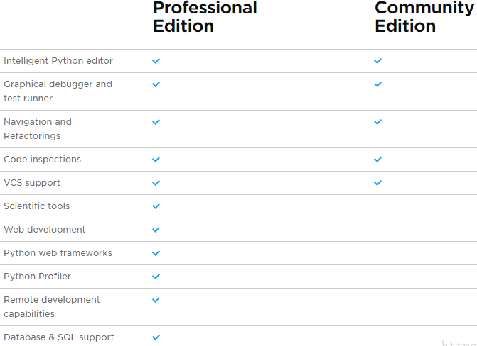

202405素養導向程式設計教學與評量-Python為例
Table of Contents

1. 研習內容
- 國中科技領域召集人課程領導增能研習
- 研習對象及人數:本市公私立國中教師，預估 25 人
- 研習時間:114 年 05 月 14 日（星期四）9:00-12:30
- 研習地點:輔導團 305 會議室
Figure 1: 202405 素養導向程式設計教學與評量-Python 為例
2. Python簡介與應用
2.1. 程式語言教學考量方向
2.1.1. 開發工具/平台
- PyCharm, Visual Studio Code, Spyder
- Online Python IDE
- Jupyter notebook
- Google Colab
2.1.2. 語言的親和力
語言是否易學易用
2.1.3. 語言的實用性
語言是否能應用於日常生活
2.1.4. 教學資源
- 相關教材資源
- 作業、考題資源: C/C++的題目多數都能直接用，部份需修改
- 作業繳交
- 線上測驗
2.2. Why Python?
2.2.1. 受歡迎程度: TOIBE index
TIOBE指數（TIOBE programming community index）是一種衡量程式語言流行度的標準，該指數是根據網絡搜尋引擎對含有該語言名稱的查詢結果的數量計算出來的1。該指數涵蓋了網民在Google、Google Blogger、MSN 、雅虎、百度、維基百科和YouTube的搜索結果。該指數於2001年推出，每月更新一次。用戶可以免費查詢信息，但如果需要長期的統計數據則要付費購買。該指數的作者表示，在人們做出各種戰略決策時，該指數可能是有價值的。TIOBE主要關注於圖靈完備性語言2，所以它不提供例如HTML的受歡迎程度信息3。
Python由2019年的第三名

Figure 2: 2019年Python排名第三
到2024年已躍居榜首，2,3,4名的分別為C, C++, Java
Figure 3: 2024年Python排名第一

Figure 4: Python: 2002-2024年Python的TOIBE index變化
2.2.2. 為何要學習AI+大數據

Figure 5: 學習Python的幾個理由
國中生學習人工智慧 (AI) 和大數據相關知識具有多方面的好處，以下是其中一些原因：
- 開拓思維：學習 AI 和大數據相關知識可以激發學生的創造力和解決問題的能力。這些領域涉及到複雜的數據分析和模式識別，培養學生從多個角度思考和處理問題的能力。
- 就業前景：AI 和大數據是當今和未來的熱門行業，學習相關知識可以為學生打下良好的職業基礎。許多行業都需要專業的數據分析師和機器學習工程師，而擁有相關技能的人才將更受歡迎。
- 實用性：AI 和大數據的應用已經滲透到日常生活的各個方面，例如智能推薦系統、人臉識別技術、智能家居等。學習這些知識可以幫助學生更好地理解並應用科技。
- 創新精神：AI 和大數據領域充滿了創新和挑戰，學習相關知識可以培養學生的創業精神和探索未知領域的勇氣。這對於培養未來的創業家和技術領袖是至關重要的。
2.2.3. Python應用於AI與大數據的優勢
人工智慧 (AI)：
- Python 在人工智慧領域中扮演著重要角色，因為它具有豐富的 AI 相關庫和框架，如 TensorFlow、PyTorch、Keras 等，這些庫提供了許多強大的工具和算法，用於機器學習、深度學習和自然語言處理等 AI 應用。
- Python 的簡潔語法和豐富的庫使得開發 AI 應用變得更加容易和高效，因此，許多 AI 專案和研究都選擇 Python 作為開發語言。
大數據：
- Python 也在大數據領域中廣泛應用，因為它提供了許多處理和分析大數據的庫和工具，如 Pandas、NumPy、SciPy 等，這些庫使得大數據的處理和分析變得更加方便和高效。
- 此外，Python 還與大數據生態系統中的其他技術密切集成，例如 Apache Hadoop、Spark 等，使得 Python 成為一個理想的大數據開發語言。
- 大數據分析和機器學習通常是相互關聯的，Python 的豐富庫和易用性使得從大數據中提取價值並應用機器學習模型變得更加容易。
2.2.4. 適合初學者
- 簡潔易懂的語法，不需要繁瑣的記憶和掌握。
- 豐富的內建庫和第三方庫，提供了大量方便的功能和工具。
- 支援多種編程範式，包括面向對象編程、函數式編程等，適合初學者理解和實踐不同的編程風格。
- 教導學生使用 print() 函數來輸出變量的值，幫助他們理解程式運行過程中的問題。
- 教導學生使用調試器工具來逐步執行程式並觀察變量的值變化，找出問題所在。
- 鼓勵學生閱讀錯誤訊息，理解錯誤的種類和可能的原因，培養解決問題的能力。
2.2.5. 適合解決生活中的問題
- Python 是一門容易上手的程式語言，具有強大的應用範疇，包括網頁開發、資料分析、人工智慧等，教導學生 Python 可以培養其解決問題和創造力的能力。
- Python 在業界和學術界都廣泛使用，學會 Python 能夠為學生未來的學術和職業生涯打下良好基礎。
2.2.6. 適合偷懶的老師
- 不一定要買課本, 線上免費教材豐富, 例如Python: From Zero to Error
- 線上教學投影片
- 線上免費試題
- 免費online judge:
2.3. Python應用領域
Python 在應用領域上有許多特色，與其他程式語言相比，它的主要特點包括：
- 網頁開發：Python 在網頁開發領域具有廣泛的應用，例如使用 Django、Flask 等框架可以快速開發強大的網站和網路應用程式。
- 資料科學與人工智慧：Python 成為了資料科學和人工智慧領域的首選語言，擁有豐富的科學計算庫（如 NumPy、Pandas、SciPy）、機器學習庫（如 TensorFlow、PyTorch、scikit-learn）以及可視化工具（如 Matplotlib、Seaborn）等，這些庫使得數據處理、機器學習和人工智慧開發變得更加容易和高效。
- 自動化與腳本：Python 是一個優秀的自動化和腳本語言，能夠幫助使用者快速編寫各種自動化腳本，從系統管理到檔案處理都能輕鬆應對。
- 桌面應用程式：雖然不如其他語言像是 C# 或 Java 那樣主要用於桌面應用程式開發，但 Python 也有一些框架（如 Tkinter、PyQt、wxPython）可用於開發桌面應用程式。
- 科學計算：Python 在科學計算領域中廣泛應用，因為它易於學習和使用，並且具有豐富的科學計算庫，使得數值計算、統計分析、數據可視化等工作變得更加容易。
2.4. Python的幾種編輯工具
- Online Python
- Google Colab
- Jupyter Notebook
- PyCharm / Spider
3. 程式教學、除錯
以下的優缺點係以學生/教師的教/學為出發點進行分析。
3.1. Google Colab
3.1.1. 簡介
3.1.2. 優點
- 使用方便簡單，學生只要有Gmail帳號即可使用，介面易學易用，容易上手
- 學生所寫程式可儲存於Google雲端硬碟，方便日後回顧
- 方便教師撰寫教學重點，結合教材與練習空間
- 可結合作業，要求學生詳述程式運作原理，並輸出執行結果
- 可結合Google Classroom進行作業發派與評分: 較方便，教師可事先提供副本
已預設安裝多數常用套件(如numpy, pandas, matplotlib, seaborn, beautifulsoup4, tensorflow, scikit-learn, scipy…)，使用者無需再自行下載安裝: 可於colab執行下列指令查看已安裝的套件列表
1: !pip list
- 完善的資料視覺化(Data Visualization)功能
- 整合Google Drive: 可存取使用者Google Drive上的檔案
- 提供免費的計算資源: GPU, TPU
- 提供協作功能: 多個使用者可共編一個colab notebook，適合團隊project開發
3.1.3. 缺點
- 須提供網路環境: 不適用線上測驗
- 缺乏Judge功能: 教師需以人工評分作業，耗費人力
- 存取檔案較麻煩
- 執行時間受限: 連續運作時限為12小時
- 程式除錯、追踪不易: 缺乏友善的debug介面
3.1.4. 使用
3.2. Jupyter Notebook
3.2.1. 簡介
- Jupyter這個名字主要是由Julia、Python及R所構成，當然除了Julia、的Python及R之外，還有提供許多的kernels(例如Java、C#、Go、Ruby、JavaScript等超過50多種Jupyter kernels)。
Jupyter是由Notebook Frontend、 Jupyter Server及Kernel Protocol這三部分所建立4
Figure 6: Jupyter notebook架構
- Jupyter Notebook您可以把它想像成是上述所講的IPython + Notebook整合架構，它是一個介於編輯器(例如Atom)及IDE(Spider、PyCharm、Vim) 之間的應用環境，可讓您編寫程式時利用其直譯式的特性，達到高互動執行結果，並且很容易呈現資料視覺化的執行。Jupyter Notebook包含了兩個組成： Web Application和Notebook Documents。
- 網頁應用(Web Application)：基於瀏覽器(web-based)的互動創作及應用工具，包括可以計算、數學、文檔創作及豐富的多媒體輸出。
- 文檔顯示(Notebook Documents)：顯示所有在上述Web Application當中的內容，包括計算的輸入/輸出、文件說明/解釋、數學運算及式子、圖片及所有豐富多媒體內容。
- Jupyter Notebook介紹及安裝說明
- 網頁應用(Web Application)：基於瀏覽器(web-based)的互動創作及應用工具，包括可以計算、數學、文檔創作及豐富的多媒體輸出。
3.2.2. 優點
- 可於單機環境運作，無需網路環境: 方便學生自行練習
- 方便教師撰寫教學重點，結合教材與練習空間
- 可結合作業，要求學生詳述程式運作原理，並輸出執行結果
- 方便程式存取本機資料檔
- 可用於考試情境: 校內架設Judge Server
3.2.3. 缺點
- 運算速度受限本機資源(CPU、GPU)
- 所有套件均需自行安裝，自行管理套件版本
- 不適合團體協作開發
- 程式檔儲存於本機
3.2.4. 安裝
使用Anaconda安裝
官方強烈建議使用Anaconda Distribution來進行安裝，因為Jupyter Notebook、常用的科學計算(Scientific Computing)及資料科學(Data Science)所需packages都已經包含在裡面，對於未來想進行Data Science的應用學習有很大的方便性4。
使用pip安裝
As an existing Python user, you may wish to install Jupyter using Python’s package manager, pip, instead of Anaconda. First, ensure that you have the latest pip; older versions may have trouble with some dependencies:
pip3 install --upgrade pip
Then install the Jupyter Notebook using:
pip3 install jupyter
3.2.5. 使用
1: jupyter notebook
介面
Jupyter Notebook的編輯介面主要分為下面四部分：檔名(File Name)、主選單(Menu)、工具列(Toolbar)及編輯單元(Cell)。

Figure 7: Jupyter notebook
管理Cell
Figure 8: Cell management
編輯Cell

Figure 9: Cell
載入/儲存程式

Figure 10: ipynb load/save
3.3. PyCharm
3.3.1. 簡介
Professional Edition v.s. Community Edition5

Figure 11: 專業版與社區版的差異
- 功能上的區別：
- PyCharm專業版是功能最豐富的，與社區版相比，PyCharm 專業版增加了Web開發、Python We框架、Python分析器、遠端開發、支援資料庫與SQL等更多高級功能。
- PyCharm的社區版中沒有Web開發、Python We框架、Python分析器、遠端開發、支援資料庫與SQL等這些功能。
- PyCharm教育版的功能雖然比專業版會少一些，但與社區版相比，更加支援學校的教學工作。
- PyCharm專業版是功能最豐富的，與社區版相比，PyCharm 專業版增加了Web開發、Python We框架、Python分析器、遠端開發、支援資料庫與SQL等更多高級功能。
- 授權方式不同
- PyCharm的專業版是需要付費購買該軟體的啟動碼才可以進行使用。
- PyCharm的社區版提供給開發者免費使用的。
- PyCharm的教育版只針對師生認證的使用者才免費使用。
- PyCharm的專業版是需要付費購買該軟體的啟動碼才可以進行使用。
- 適用人群不同
- PyCharm的專業版是適用於一些公司進行專業網際網路開發適用，這需要使用公司投入一定資金。
- PyCharm的社區版是提供給程式設計愛好者使用學術交流的，所以是免費提供的，其功能雖然不夠全面，但能夠滿足日常開發需要。
- PyCharm的教育版則是以公益為目的免費提供給各大學校進行程式設計教學，發展程式設計教育事業。
- PyCharm的專業版是適用於一些公司進行專業網際網路開發適用，這需要使用公司投入一定資金。
3.3.2. 優點
- 除錯、追踪功能完善
- 可於單機環境運作，無需網路環境: 方便學生自行練習
- 方便程式存取本機資料檔
- 可用於考試情境: 校內架設Judge Server
- 可搭配Github進行團隊協作
3.3.3. 缺點
- 需安裝軟體: 電腦教室需事先安裝，學生帳戶無安裝權限
- 程式檔儲存於本機: 學生要自行複製儲存到隨身碟或雲端硬碟
4. 作業繳交
以Google Classroom + Google Colab為例，示範如何在Google Classroom平台發派程式作業
4.1. 準備好Colab notebook
4.2. 於Google Classroom發使作業
5. 線上評量
5.1. Online Judge Server
5.1.1. 簡介
5.1.2. 運作原理
5.2. 學生端
以QindaU Online Judge Server為例，示範學生如何進行線上評量
5.3. QingdaU Online Judge Server
5.4. 教師端
以QindaU Online Judge Server為例，示範教師如何出題
6. [示範]安裝Online Judge Server
6.1. 安裝 Docker
6.1.1. 安裝 Windows Docker Desktop
安裝Python
- powershell, 輸入python
- 取得python
Step 1:
設定BIOS
- 確定BIOS: Configuration / Intel Virtual Technology為Enabled
6.1.2. 下載Docker
6.1.3. 安裝
- check: Use WSL 2 instead of Hyper-V
- check: Add shourtcut to desktop
- close and restart: 重新開機
- 啟動桌面Docker
6.1.4. 除錯
- 出現錯誤
- 以管理者身份開變powershell
輸入以下設定
1: bcdedit /set hypervisorlaunchtype auto 2: dism.exe /online /enable-feature /featurename:Microsoft-Windows-Subsystem-Linux /all /norestart
- 重新開機
6.1.5. 設定Docker
- 點選Settings / Resources / File sharing
- 選定一個資料夾(例如D:\QD)
- 按+
- 按Apply & restart
6.1.6. 安裝git
- 下載Git for Windows: https://git-scm.com/download/win
1: winget install --id Git.Git -e --source winget
重新啟動powershell
6.1.7. Clone and Start QD
1: cd D:\QD 2: git clone -b 2.0 https://github.com/QingdaoU/OnlineJudgeDeploy.git 3: cd OnlineJudgeDeploy 4: docker-compose up -d